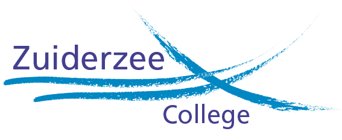

Programing
Ik programeer nu anderhalf jaar. Het begon met het maaken van een discord bot en nu maak ik game scripts voor Fivem. ook ben ik al een tijdje bezig met webdevelopment daarom heb ik ook mijn eigen website gemaakt.


School
Ik zit op school op het Zuiderzee-college in Zaandam waar ik de opleiding mediavormgeefing & ICT volg. Voor mijn vorige school heb ik stage gelopen in het Antoni Van Leeuwenhoek ziekenhuis op de afdeling I&A werkplek beheer.